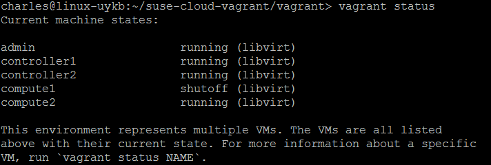

Lab 2017
References
Prerequisites
1. Hardware: x86_64 machine with hardware virtualization capability (Intel VT-x or AMD-V) enabled in the BIOS,
and at least ~16GB spare disk and 3GB RAM
2. Hypervisor (KVM & Libvirt): zypper install -t pattern kvm_server (OpenSUSE)
3. Vagrant >= 1.6.5
My Environment
Installation
Get installaton source
git clone https://github.com/SUSE-Cloud/suse-cloud-vagrant.git
Install vagrant & libvirt
wget https://releases.hashicorp.com/vagrant/1.8.7/vagrant_1.8.7_x86_64.rpm vagrant.rpm
sudo zypper install in vagrant.rpm
vagrant plugin install vagrant-libvirt
(OR https://software.opensuse.org/package/vagrant)
(OR https://software.opensuse.org/package/rubygem-vagrant-libvirt)
Add boxes
vagrant box add suse/sles12sp2 // not working, 503 Service Unavailable
vagrant box add suse/cloud7-admin // not working, 503 Service Unavailable
Add boxes (temporary workaround)
download suse/cloud7-admin & suse/sles12sp2 box/json from http://beta.suse.com/private/SUSE-CLOUD/cloud7-vagrant/
cd ~/Downloads
vagrant box add cloud7-admin-vagrant.x86_64-0.0.1.libvirt.json
vagrant box add sles12sp2.x86_64-0.0.1.libvirt.json
Vagrant up
cd ~/suse-cloud-vagrant/vagrant
vagrant up admin && vagrant up
Verification
browse 192.168.124.10 (credential: crowbar/crowbar), all 5 nodes should be up
Setup nodes on admin
vagrant ssh admin // q then y to accept end-user license agreement (EULA)
sudo -i
/root/bin/setup-node-aliases.sh
crowbar batch build HA-compute-cloud-demo.yaml
exit
Setup nodes on either controller
vagrant ssh controller1
sudo -i
/root/bin/upload-cirros
exit
Verification
browse 192.168.124.10 or localhost:8000 (credential: crowbar/crowbar), all 5 nodes should be renamed and in Ready state
Add remotes to Pacemaker cluster
browse 192.168.124.10, edit pacemaker "service" barclamp
drag compute1 & compute2 to "Deployment" --> "pacemaker-remote" section
make sure "Configuration mode for STONITH" is set to SBD
make compute1 & compute2 have "/dev/vdb" as their "Block devices for node"
click "Apply" button after finish
Monitor proposal progress (optional)
vagrant ssh admin
sudo -i
tail -f /var/log/crowbar/production.log
tail -f /var/log/crowbar/chef-client/*.log
Check status of cluster nodes and remotes
vagrant ssh controller1
sudo -i
crm status
Nova setup
browse 192.168.124.10, edit nova barclamp
drag "services" to section "nova-controller" (might alreay be done)
drag "services (2 remote notes)" to section "nova-compute-kvm"
click "Apply" button after finish
Monitor proposal progress (optional)
vagrant ssh admin
sudo -i
tail -f /var/log/crowbar/production.log
tail -f /var/log/crowbar/chef-client/*.log
Check status of nova resources in cluster
vagrant ssh controller1
sudo -i
crm status
Setup shared storage (use admin's NFS server)
Locate shared directories via nfs_client barclamp
Check /etc/exports on admin server
Check /etc/fstab on controller/compute nodes
Run mount on controller/compute nodes
Boot a VM
vagrant ssh controller1
sudo -i
source .openrc
openstack image list // get image name
openstack flavor list // get flavor name
neutron net-list // get fixed net ID
nova boot --image cirros-machine --flavor m1.tiny --nic net-id=806f0449-9048-4427-a8b6-acd7480d61ff testvm
Verify VM is booted
nova show testvm
nova list
Assign a Floating IP
neutron floatingip-create FLOATING_NET_ID // create floating IP
nova list // get VM IP
neutron port-list | grep VM_FIXED_IP // get port id
neutron floatingip-associate FLOATING_IP_ID PORT_ID // associate floating IP with VM port
neutron floatingip-list // should have has two associated IPs (fixed + floating)
nova list // verify testvm now has two associated IPs (fixed + floating)
Allow ICMP and SSH for VMs
// if there two "defult" security group, just run "openstack security group delete DUPLICATE_GROUP_ID"
openstack security group rule create --proto icmp default
openstack security group rule create --proto tcp --dst-port 22 default
openstack security group rule list // verify tcp + icmp in rules list
Setup monitoring
ping VM_FLOATING_IP // ping VM
nova list --fields host,name // get compute host
ping host // ping host where the VM is running
crm resource show nova-evacuate // find node running nova-evacuate
tail -f /var/log/messages | grep NovaEvacuate // on that node, check log messages for NovaEvacuate workflow
crm_mon // monitor cluster status
Open permission for console.log in /var/lib/nova
cd /var/lib/ chown -R nova:nova nova // option 1
cd /var/lib/ chmod -R 777 nova // option 2
vagrant ssh COMPUTE_HOST pkill -9 -f pacemaker_remoted Compute1 which runs VM shuts down after "pkill -9 -f pacemaker_remoted", when NovaEvacuate completes and fencing occurrs. VM is evacauted to compute2.  /var/log/nova/fence_compute.log on controller2 which runs fence_compute (self-fencing initiates) /var/log/messages on controller2 (NovaEvacuate completes) evacuation works 1. Ping to the VM is interrupted, then resumed 2. Ping to the compute node is interrupted, then resumed 3. Log messages show: NovaEvacuate [...] Initiating evacuation NovaEvacuate [...] Completed evacuation 4. crm status shows compute node offline (then back online) 5. Verify compute node was fenced 6. Check /var/log/messages on DC 7. Verify VM moved to another compute node nova list --fields host,nameTest Compute Node Failover
Test Result on 9/2
BEFORE (VM is running on compute1)

AFTER (VM fails over to compute2)
Expected Output